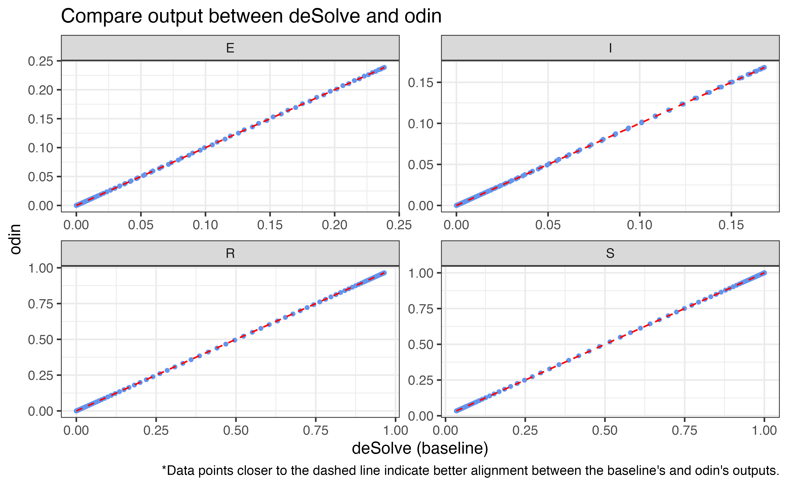
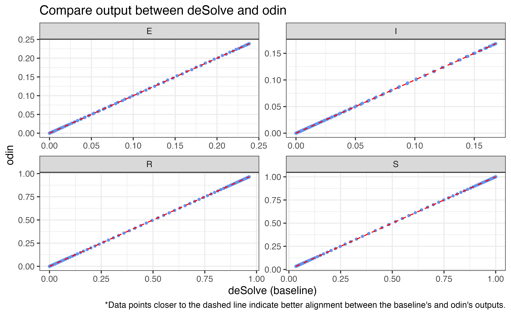
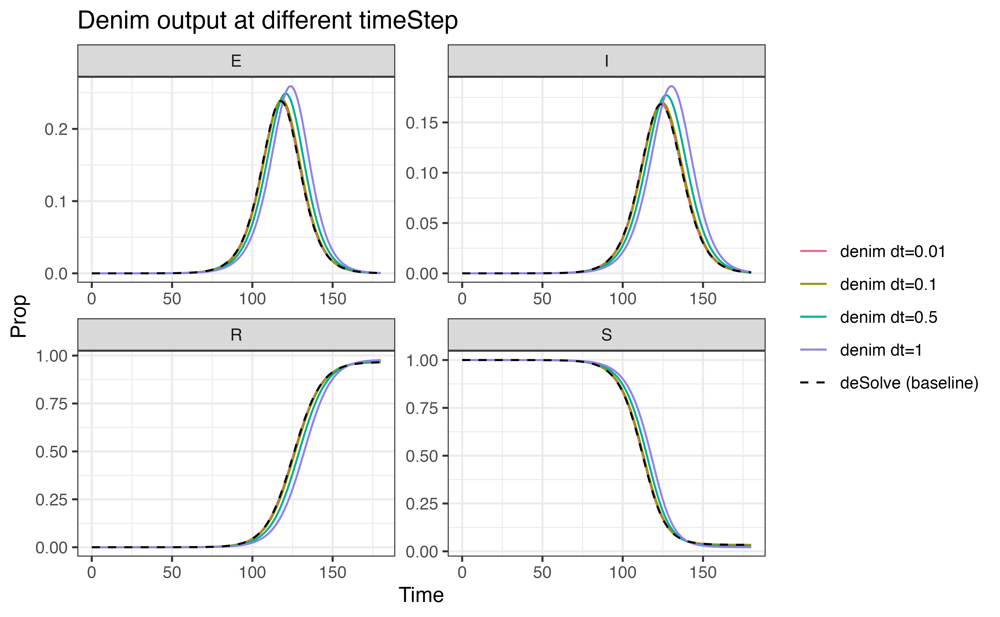

To assess denim’s performance, we benchmark it against other available packages, listed in the table below.
| Package | Model time | Note |
|---|---|---|
| uSEIR | discrete |
2 implementations for uSEIR that will be tested
|
| deSolve | continuous |
3 ways to define model for deSolve that will be tested
|
| odin | discrete | A manual implementation of denim’s algorithm, using odin is tested |
| denim | discrete |
Two methods for defining distributions are tested:
|
The benchmarking process was conducted on a Macbook with M2 Pro chip, 16 GBs of RAM and 10 cores (6 performance and 4 efficiency).
Benchmark settings
All approaches will simulate the following SEIR model, with the same simulation duration of 180
beta can also be computed as \(beta = R_0/tr\) where \(R_0\) is the basic reproduction number and
\(tr\) is the infectious period.
Each approach will be run 50 times
total_runs <- 50L # number of runs
sim_duration <- 180 # duration of simulationuSEIR
Simulate model using uSEIR approach (Hernández et al. 2021).
Source code: https://github.com/jjgomezcadenas/useirn/blob/master/nb/uSEIR.ipynb
load useir implementation in pure Python
## Warning: package 'reticulate' was built under R version 4.3.3
# use_python("/opt/anaconda3/envs/bnn/bin/python", required = TRUE)
use_condaenv(condaenv='bnn', required = TRUE)
matplotlib <- import("matplotlib")
matplotlib$use("Agg", force = TRUE)
py_run_file("../supplements/useir_python.py")Python implementation
Code for running uSEIR in pure Python
import time
import concurrent.futures
import pickle
import os
from statistics import mean
python_runs = []
def get_python_runtime(n):
start = time.time()
df = solve_uSeir(ti_shape = 2,
ti_scale = 4,
tr_shape = 2,
tr_scale = 3,
R0 = 3.5)
end = time.time()
return end - start
# load cached result if available instead of rerun due to long run time
cached_python_runs = "../supplements/cached_runs/python_runs.pkl"
if os.path.exists(cached_python_runs):
# If the file exists, load the Python list from the file
with open(cached_python_runs, 'rb') as f:
python_runs = pickle.load(f)
else:
print("no cache found")
# multithread instead for quicker result
with concurrent.futures.ProcessPoolExecutor(max_workers=8) as executor:
python_runs = list(executor.map(get_python_runtime, range(r.total_runs)))
# Save to cache
with open(cached_python_runs, 'wb') as f:
pickle.dump(python_runs, f)
# plot_useir((df,), ('G',), T = 'uSEIR', figsize=(14,8))
# print(f'python solve_seir call: dr = {end-start}')Run time for uSEIR approach, Python implementation (in seconds)
## [1] 54.79370 54.23037 54.61863 54.13476 54.73439 54.35928 54.48391 54.56821
## [9] 53.26567 53.35437 53.44551 53.31425 53.51092 53.19878 53.92493 53.84889
## [17] 54.05378 53.66922 53.65536 53.54520 53.73345 53.88690 54.23988 54.19460
## [25] 53.64543 53.55217 53.66061 53.67430 53.59397 53.65503 54.32232 53.98363
## [33] 53.53084 53.79021 53.85689 53.45313 53.61043 53.53294 54.00833 54.11180
## [41] 53.94760 53.61952 53.80676 53.74364 53.68474 53.63701 53.59615 53.81793
## [49] 44.74661 44.77127Median run time for uSEIR approach, Python implementation: 53.7090955 seconds
Cython implementation
Code for running uSEIR in Cython (C backend)
# import precompiled cython module
import sys
sys.path.insert(0, "../supplements")
import useir
import time
import pyarrow as pa
cython_runs = []
# --- Get runtime ----
for i in range(r.total_runs):
start = time.time()
df = useir.csolve_uSeir(dist = "gamma",
ti_shape = 2,
ti_scale = 4,
tr_shape = 2,
tr_scale = 3,
R0 = 3.5
)
end = time.time()
cython_runs = cython_runs + [end - start]## Function compute_pde with sampling = Fine, time epsilon = 0.01
## statistical distribution = gamma, ti = 8.0, tr = 6.0
## number of exposed compartments = 4702, infected compartments = 3526
## len pdE = 4702, max(pdE) =0.0009196976461058881 len pdi = 3526 max(pdI) =0.0012262625368251734
## prob = 0.5833333333333334, pn = 0.005833333333333334
## Function compute_pde with sampling = Fine, time epsilon = 0.01
## statistical distribution = gamma, ti = 8.0, tr = 6.0
## number of exposed compartments = 4702, infected compartments = 3526
## len pdE = 4702, max(pdE) =0.0009196976461058881 len pdi = 3526 max(pdI) =0.0012262625368251734
## prob = 0.5833333333333334, pn = 0.005833333333333334
## Function compute_pde with sampling = Fine, time epsilon = 0.01
## statistical distribution = gamma, ti = 8.0, tr = 6.0
## number of exposed compartments = 4702, infected compartments = 3526
## len pdE = 4702, max(pdE) =0.0009196976461058881 len pdi = 3526 max(pdI) =0.0012262625368251734
## prob = 0.5833333333333334, pn = 0.005833333333333334
## Function compute_pde with sampling = Fine, time epsilon = 0.01
## statistical distribution = gamma, ti = 8.0, tr = 6.0
## number of exposed compartments = 4702, infected compartments = 3526
## len pdE = 4702, max(pdE) =0.0009196976461058881 len pdi = 3526 max(pdI) =0.0012262625368251734
## prob = 0.5833333333333334, pn = 0.005833333333333334
## Function compute_pde with sampling = Fine, time epsilon = 0.01
## statistical distribution = gamma, ti = 8.0, tr = 6.0
## number of exposed compartments = 4702, infected compartments = 3526
## len pdE = 4702, max(pdE) =0.0009196976461058881 len pdi = 3526 max(pdI) =0.0012262625368251734
## prob = 0.5833333333333334, pn = 0.005833333333333334
## Function compute_pde with sampling = Fine, time epsilon = 0.01
## statistical distribution = gamma, ti = 8.0, tr = 6.0
## number of exposed compartments = 4702, infected compartments = 3526
## len pdE = 4702, max(pdE) =0.0009196976461058881 len pdi = 3526 max(pdI) =0.0012262625368251734
## prob = 0.5833333333333334, pn = 0.005833333333333334
## Function compute_pde with sampling = Fine, time epsilon = 0.01
## statistical distribution = gamma, ti = 8.0, tr = 6.0
## number of exposed compartments = 4702, infected compartments = 3526
## len pdE = 4702, max(pdE) =0.0009196976461058881 len pdi = 3526 max(pdI) =0.0012262625368251734
## prob = 0.5833333333333334, pn = 0.005833333333333334
## Function compute_pde with sampling = Fine, time epsilon = 0.01
## statistical distribution = gamma, ti = 8.0, tr = 6.0
## number of exposed compartments = 4702, infected compartments = 3526
## len pdE = 4702, max(pdE) =0.0009196976461058881 len pdi = 3526 max(pdI) =0.0012262625368251734
## prob = 0.5833333333333334, pn = 0.005833333333333334
## Function compute_pde with sampling = Fine, time epsilon = 0.01
## statistical distribution = gamma, ti = 8.0, tr = 6.0
## number of exposed compartments = 4702, infected compartments = 3526
## len pdE = 4702, max(pdE) =0.0009196976461058881 len pdi = 3526 max(pdI) =0.0012262625368251734
## prob = 0.5833333333333334, pn = 0.005833333333333334
## Function compute_pde with sampling = Fine, time epsilon = 0.01
## statistical distribution = gamma, ti = 8.0, tr = 6.0
## number of exposed compartments = 4702, infected compartments = 3526
## len pdE = 4702, max(pdE) =0.0009196976461058881 len pdi = 3526 max(pdI) =0.0012262625368251734
## prob = 0.5833333333333334, pn = 0.005833333333333334
## Function compute_pde with sampling = Fine, time epsilon = 0.01
## statistical distribution = gamma, ti = 8.0, tr = 6.0
## number of exposed compartments = 4702, infected compartments = 3526
## len pdE = 4702, max(pdE) =0.0009196976461058881 len pdi = 3526 max(pdI) =0.0012262625368251734
## prob = 0.5833333333333334, pn = 0.005833333333333334
## Function compute_pde with sampling = Fine, time epsilon = 0.01
## statistical distribution = gamma, ti = 8.0, tr = 6.0
## number of exposed compartments = 4702, infected compartments = 3526
## len pdE = 4702, max(pdE) =0.0009196976461058881 len pdi = 3526 max(pdI) =0.0012262625368251734
## prob = 0.5833333333333334, pn = 0.005833333333333334
## Function compute_pde with sampling = Fine, time epsilon = 0.01
## statistical distribution = gamma, ti = 8.0, tr = 6.0
## number of exposed compartments = 4702, infected compartments = 3526
## len pdE = 4702, max(pdE) =0.0009196976461058881 len pdi = 3526 max(pdI) =0.0012262625368251734
## prob = 0.5833333333333334, pn = 0.005833333333333334
## Function compute_pde with sampling = Fine, time epsilon = 0.01
## statistical distribution = gamma, ti = 8.0, tr = 6.0
## number of exposed compartments = 4702, infected compartments = 3526
## len pdE = 4702, max(pdE) =0.0009196976461058881 len pdi = 3526 max(pdI) =0.0012262625368251734
## prob = 0.5833333333333334, pn = 0.005833333333333334
## Function compute_pde with sampling = Fine, time epsilon = 0.01
## statistical distribution = gamma, ti = 8.0, tr = 6.0
## number of exposed compartments = 4702, infected compartments = 3526
## len pdE = 4702, max(pdE) =0.0009196976461058881 len pdi = 3526 max(pdI) =0.0012262625368251734
## prob = 0.5833333333333334, pn = 0.005833333333333334
## Function compute_pde with sampling = Fine, time epsilon = 0.01
## statistical distribution = gamma, ti = 8.0, tr = 6.0
## number of exposed compartments = 4702, infected compartments = 3526
## len pdE = 4702, max(pdE) =0.0009196976461058881 len pdi = 3526 max(pdI) =0.0012262625368251734
## prob = 0.5833333333333334, pn = 0.005833333333333334
## Function compute_pde with sampling = Fine, time epsilon = 0.01
## statistical distribution = gamma, ti = 8.0, tr = 6.0
## number of exposed compartments = 4702, infected compartments = 3526
## len pdE = 4702, max(pdE) =0.0009196976461058881 len pdi = 3526 max(pdI) =0.0012262625368251734
## prob = 0.5833333333333334, pn = 0.005833333333333334
## Function compute_pde with sampling = Fine, time epsilon = 0.01
## statistical distribution = gamma, ti = 8.0, tr = 6.0
## number of exposed compartments = 4702, infected compartments = 3526
## len pdE = 4702, max(pdE) =0.0009196976461058881 len pdi = 3526 max(pdI) =0.0012262625368251734
## prob = 0.5833333333333334, pn = 0.005833333333333334
## Function compute_pde with sampling = Fine, time epsilon = 0.01
## statistical distribution = gamma, ti = 8.0, tr = 6.0
## number of exposed compartments = 4702, infected compartments = 3526
## len pdE = 4702, max(pdE) =0.0009196976461058881 len pdi = 3526 max(pdI) =0.0012262625368251734
## prob = 0.5833333333333334, pn = 0.005833333333333334
## Function compute_pde with sampling = Fine, time epsilon = 0.01
## statistical distribution = gamma, ti = 8.0, tr = 6.0
## number of exposed compartments = 4702, infected compartments = 3526
## len pdE = 4702, max(pdE) =0.0009196976461058881 len pdi = 3526 max(pdI) =0.0012262625368251734
## prob = 0.5833333333333334, pn = 0.005833333333333334
## Function compute_pde with sampling = Fine, time epsilon = 0.01
## statistical distribution = gamma, ti = 8.0, tr = 6.0
## number of exposed compartments = 4702, infected compartments = 3526
## len pdE = 4702, max(pdE) =0.0009196976461058881 len pdi = 3526 max(pdI) =0.0012262625368251734
## prob = 0.5833333333333334, pn = 0.005833333333333334
## Function compute_pde with sampling = Fine, time epsilon = 0.01
## statistical distribution = gamma, ti = 8.0, tr = 6.0
## number of exposed compartments = 4702, infected compartments = 3526
## len pdE = 4702, max(pdE) =0.0009196976461058881 len pdi = 3526 max(pdI) =0.0012262625368251734
## prob = 0.5833333333333334, pn = 0.005833333333333334
## Function compute_pde with sampling = Fine, time epsilon = 0.01
## statistical distribution = gamma, ti = 8.0, tr = 6.0
## number of exposed compartments = 4702, infected compartments = 3526
## len pdE = 4702, max(pdE) =0.0009196976461058881 len pdi = 3526 max(pdI) =0.0012262625368251734
## prob = 0.5833333333333334, pn = 0.005833333333333334
## Function compute_pde with sampling = Fine, time epsilon = 0.01
## statistical distribution = gamma, ti = 8.0, tr = 6.0
## number of exposed compartments = 4702, infected compartments = 3526
## len pdE = 4702, max(pdE) =0.0009196976461058881 len pdi = 3526 max(pdI) =0.0012262625368251734
## prob = 0.5833333333333334, pn = 0.005833333333333334
## Function compute_pde with sampling = Fine, time epsilon = 0.01
## statistical distribution = gamma, ti = 8.0, tr = 6.0
## number of exposed compartments = 4702, infected compartments = 3526
## len pdE = 4702, max(pdE) =0.0009196976461058881 len pdi = 3526 max(pdI) =0.0012262625368251734
## prob = 0.5833333333333334, pn = 0.005833333333333334
## Function compute_pde with sampling = Fine, time epsilon = 0.01
## statistical distribution = gamma, ti = 8.0, tr = 6.0
## number of exposed compartments = 4702, infected compartments = 3526
## len pdE = 4702, max(pdE) =0.0009196976461058881 len pdi = 3526 max(pdI) =0.0012262625368251734
## prob = 0.5833333333333334, pn = 0.005833333333333334
## Function compute_pde with sampling = Fine, time epsilon = 0.01
## statistical distribution = gamma, ti = 8.0, tr = 6.0
## number of exposed compartments = 4702, infected compartments = 3526
## len pdE = 4702, max(pdE) =0.0009196976461058881 len pdi = 3526 max(pdI) =0.0012262625368251734
## prob = 0.5833333333333334, pn = 0.005833333333333334
## Function compute_pde with sampling = Fine, time epsilon = 0.01
## statistical distribution = gamma, ti = 8.0, tr = 6.0
## number of exposed compartments = 4702, infected compartments = 3526
## len pdE = 4702, max(pdE) =0.0009196976461058881 len pdi = 3526 max(pdI) =0.0012262625368251734
## prob = 0.5833333333333334, pn = 0.005833333333333334
## Function compute_pde with sampling = Fine, time epsilon = 0.01
## statistical distribution = gamma, ti = 8.0, tr = 6.0
## number of exposed compartments = 4702, infected compartments = 3526
## len pdE = 4702, max(pdE) =0.0009196976461058881 len pdi = 3526 max(pdI) =0.0012262625368251734
## prob = 0.5833333333333334, pn = 0.005833333333333334
## Function compute_pde with sampling = Fine, time epsilon = 0.01
## statistical distribution = gamma, ti = 8.0, tr = 6.0
## number of exposed compartments = 4702, infected compartments = 3526
## len pdE = 4702, max(pdE) =0.0009196976461058881 len pdi = 3526 max(pdI) =0.0012262625368251734
## prob = 0.5833333333333334, pn = 0.005833333333333334
## Function compute_pde with sampling = Fine, time epsilon = 0.01
## statistical distribution = gamma, ti = 8.0, tr = 6.0
## number of exposed compartments = 4702, infected compartments = 3526
## len pdE = 4702, max(pdE) =0.0009196976461058881 len pdi = 3526 max(pdI) =0.0012262625368251734
## prob = 0.5833333333333334, pn = 0.005833333333333334
## Function compute_pde with sampling = Fine, time epsilon = 0.01
## statistical distribution = gamma, ti = 8.0, tr = 6.0
## number of exposed compartments = 4702, infected compartments = 3526
## len pdE = 4702, max(pdE) =0.0009196976461058881 len pdi = 3526 max(pdI) =0.0012262625368251734
## prob = 0.5833333333333334, pn = 0.005833333333333334
## Function compute_pde with sampling = Fine, time epsilon = 0.01
## statistical distribution = gamma, ti = 8.0, tr = 6.0
## number of exposed compartments = 4702, infected compartments = 3526
## len pdE = 4702, max(pdE) =0.0009196976461058881 len pdi = 3526 max(pdI) =0.0012262625368251734
## prob = 0.5833333333333334, pn = 0.005833333333333334
## Function compute_pde with sampling = Fine, time epsilon = 0.01
## statistical distribution = gamma, ti = 8.0, tr = 6.0
## number of exposed compartments = 4702, infected compartments = 3526
## len pdE = 4702, max(pdE) =0.0009196976461058881 len pdi = 3526 max(pdI) =0.0012262625368251734
## prob = 0.5833333333333334, pn = 0.005833333333333334
## Function compute_pde with sampling = Fine, time epsilon = 0.01
## statistical distribution = gamma, ti = 8.0, tr = 6.0
## number of exposed compartments = 4702, infected compartments = 3526
## len pdE = 4702, max(pdE) =0.0009196976461058881 len pdi = 3526 max(pdI) =0.0012262625368251734
## prob = 0.5833333333333334, pn = 0.005833333333333334
## Function compute_pde with sampling = Fine, time epsilon = 0.01
## statistical distribution = gamma, ti = 8.0, tr = 6.0
## number of exposed compartments = 4702, infected compartments = 3526
## len pdE = 4702, max(pdE) =0.0009196976461058881 len pdi = 3526 max(pdI) =0.0012262625368251734
## prob = 0.5833333333333334, pn = 0.005833333333333334
## Function compute_pde with sampling = Fine, time epsilon = 0.01
## statistical distribution = gamma, ti = 8.0, tr = 6.0
## number of exposed compartments = 4702, infected compartments = 3526
## len pdE = 4702, max(pdE) =0.0009196976461058881 len pdi = 3526 max(pdI) =0.0012262625368251734
## prob = 0.5833333333333334, pn = 0.005833333333333334
## Function compute_pde with sampling = Fine, time epsilon = 0.01
## statistical distribution = gamma, ti = 8.0, tr = 6.0
## number of exposed compartments = 4702, infected compartments = 3526
## len pdE = 4702, max(pdE) =0.0009196976461058881 len pdi = 3526 max(pdI) =0.0012262625368251734
## prob = 0.5833333333333334, pn = 0.005833333333333334
## Function compute_pde with sampling = Fine, time epsilon = 0.01
## statistical distribution = gamma, ti = 8.0, tr = 6.0
## number of exposed compartments = 4702, infected compartments = 3526
## len pdE = 4702, max(pdE) =0.0009196976461058881 len pdi = 3526 max(pdI) =0.0012262625368251734
## prob = 0.5833333333333334, pn = 0.005833333333333334
## Function compute_pde with sampling = Fine, time epsilon = 0.01
## statistical distribution = gamma, ti = 8.0, tr = 6.0
## number of exposed compartments = 4702, infected compartments = 3526
## len pdE = 4702, max(pdE) =0.0009196976461058881 len pdi = 3526 max(pdI) =0.0012262625368251734
## prob = 0.5833333333333334, pn = 0.005833333333333334
## Function compute_pde with sampling = Fine, time epsilon = 0.01
## statistical distribution = gamma, ti = 8.0, tr = 6.0
## number of exposed compartments = 4702, infected compartments = 3526
## len pdE = 4702, max(pdE) =0.0009196976461058881 len pdi = 3526 max(pdI) =0.0012262625368251734
## prob = 0.5833333333333334, pn = 0.005833333333333334
## Function compute_pde with sampling = Fine, time epsilon = 0.01
## statistical distribution = gamma, ti = 8.0, tr = 6.0
## number of exposed compartments = 4702, infected compartments = 3526
## len pdE = 4702, max(pdE) =0.0009196976461058881 len pdi = 3526 max(pdI) =0.0012262625368251734
## prob = 0.5833333333333334, pn = 0.005833333333333334
## Function compute_pde with sampling = Fine, time epsilon = 0.01
## statistical distribution = gamma, ti = 8.0, tr = 6.0
## number of exposed compartments = 4702, infected compartments = 3526
## len pdE = 4702, max(pdE) =0.0009196976461058881 len pdi = 3526 max(pdI) =0.0012262625368251734
## prob = 0.5833333333333334, pn = 0.005833333333333334
## Function compute_pde with sampling = Fine, time epsilon = 0.01
## statistical distribution = gamma, ti = 8.0, tr = 6.0
## number of exposed compartments = 4702, infected compartments = 3526
## len pdE = 4702, max(pdE) =0.0009196976461058881 len pdi = 3526 max(pdI) =0.0012262625368251734
## prob = 0.5833333333333334, pn = 0.005833333333333334
## Function compute_pde with sampling = Fine, time epsilon = 0.01
## statistical distribution = gamma, ti = 8.0, tr = 6.0
## number of exposed compartments = 4702, infected compartments = 3526
## len pdE = 4702, max(pdE) =0.0009196976461058881 len pdi = 3526 max(pdI) =0.0012262625368251734
## prob = 0.5833333333333334, pn = 0.005833333333333334
## Function compute_pde with sampling = Fine, time epsilon = 0.01
## statistical distribution = gamma, ti = 8.0, tr = 6.0
## number of exposed compartments = 4702, infected compartments = 3526
## len pdE = 4702, max(pdE) =0.0009196976461058881 len pdi = 3526 max(pdI) =0.0012262625368251734
## prob = 0.5833333333333334, pn = 0.005833333333333334
## Function compute_pde with sampling = Fine, time epsilon = 0.01
## statistical distribution = gamma, ti = 8.0, tr = 6.0
## number of exposed compartments = 4702, infected compartments = 3526
## len pdE = 4702, max(pdE) =0.0009196976461058881 len pdi = 3526 max(pdI) =0.0012262625368251734
## prob = 0.5833333333333334, pn = 0.005833333333333334
## Function compute_pde with sampling = Fine, time epsilon = 0.01
## statistical distribution = gamma, ti = 8.0, tr = 6.0
## number of exposed compartments = 4702, infected compartments = 3526
## len pdE = 4702, max(pdE) =0.0009196976461058881 len pdi = 3526 max(pdI) =0.0012262625368251734
## prob = 0.5833333333333334, pn = 0.005833333333333334
## Function compute_pde with sampling = Fine, time epsilon = 0.01
## statistical distribution = gamma, ti = 8.0, tr = 6.0
## number of exposed compartments = 4702, infected compartments = 3526
## len pdE = 4702, max(pdE) =0.0009196976461058881 len pdi = 3526 max(pdI) =0.0012262625368251734
## prob = 0.5833333333333334, pn = 0.005833333333333334
## Function compute_pde with sampling = Fine, time epsilon = 0.01
## statistical distribution = gamma, ti = 8.0, tr = 6.0
## number of exposed compartments = 4702, infected compartments = 3526
## len pdE = 4702, max(pdE) =0.0009196976461058881 len pdi = 3526 max(pdI) =0.0012262625368251734
## prob = 0.5833333333333334, pn = 0.005833333333333334# ---- Get output for uSEIR -----
df = useir.csolve_uSeir(dist = "gamma",
ti_shape = 2,
ti_scale = 4,
tr_shape = 2,
tr_scale = 3,
R0 = 3.5,
pde_sampling = ""
)## Function compute_pde with sampling = , time epsilon = 0.1
## statistical distribution = gamma, ti = 8.0, tr = 6.0
## number of exposed compartments = 470, infected compartments = 352
## len pdE = 470, max(pdE) =0.009196039895832842 len pdi = 352 max(pdI) =0.01226041465028943
## prob = 0.5833333333333334, pn = 0.05833333333333334Run time for uSEIR approach, Cython implementation (in seconds)
## [1] 0.4204161 0.4766951 0.4147639 0.4129088 0.4140410 0.4138477 0.4130261
## [8] 0.4212909 0.4190290 0.4190660 0.4167402 0.4169221 0.4223282 0.4214261
## [15] 0.4183862 0.4258659 0.4213421 0.4203939 0.4140539 0.4189341 0.4143560
## [22] 0.4160459 0.4132569 0.4258149 0.4234819 0.4231689 0.4148700 0.4118659
## [29] 0.4141519 0.4160001 0.4115329 0.4168539 0.4263620 0.4209700 0.4172430
## [36] 0.4104204 0.4120522 0.4208171 0.4225249 0.4185033 0.4216430 0.4290931
## [43] 0.4313729 0.4218540 0.4188001 0.4174929 0.4225781 0.4190321 0.4265318
## [50] 0.4230540Median run time for uSEIR approach, Cython implementation: 0.4189816 seconds
deSolve
Model in R
Code for running SEIR in deSolve
## Warning: package 'deSolve' was built under R version 4.3.1
parameters <- c(gamma_rate_I = 1/4, shape_I=2,
gamma_rate_R = 1/3, shape_R = 2,
R0 = 3.5, N = 1e6)
initialValues <- c(S = 999999, E1 = 1,
E2 = 0, E = 0, I1=0,
I2=0, I=0, R=0
)
# --- Transition def for deSolve
transition_func <- function(t, state, param){
with(as.list( c(state, param) ), {
tr = shape_R*(1/gamma_rate_R)
dS = - (R0/tr) * S * I/N
# apply linear chain trick
dE1 = (R0/tr) * S * I/N - gamma_rate_I*E1
dE2 = gamma_rate_I*E1 - gamma_rate_I*E2
dE = dE1 + dE2
dI1 = gamma_rate_I*E2 - gamma_rate_R*I1
dI2 = gamma_rate_R*I1 - gamma_rate_R*I2
dI = dI1 + dI2
dR = gamma_rate_R*I2
list(c(dS, dE1, dE2, dE, dI1, dI2, dI, dR))
})
}
times <- seq(0, sim_duration, 1)
# ------ Compute run time ------
desolve_runs <- if(is.null(cached_runtime)){
bench::mark(
ode(y = initialValues, times = times, parms = parameters, func = transition_func),
iterations = total_runs
)$time[[1]]
}else{
cached_runtime$desolve_runs
}
ode_mod <- ode(y = initialValues, times = times, parms = parameters, func = transition_func)
ode_mod <- as.data.frame(ode_mod)Run time for deSolve implementation
## [1] 0.005304047 0.004200286 0.004217916 0.004035220 0.004270765 0.012629353
## [7] 0.003946947 0.003625876 0.003706810 0.003715584 0.003655396 0.003381270
## [13] 0.003337974 0.003452651 0.003362410 0.003279467 0.003470978 0.003516816
## [19] 0.003786965 0.003310299 0.003598119 0.004339440 0.003422598 0.003559620
## [25] 0.009443735 0.003371717 0.003420794 0.003429978 0.003207963 0.003452446
## [31] 0.003531986 0.003424648 0.003343099 0.003396727 0.003252735 0.003071433
## [37] 0.003125102 0.003217844 0.003100502 0.003192178 0.003369790 0.003283485
## [43] 0.003259951 0.003304641 0.008277367 0.003261550 0.003233014 0.003116533
## [49] 0.003167250 0.003189923
## attr(,"class")
## [1] "bench_time" "numeric"Median run time for deSolve, with model defined in R: 0.0034217 seconds
Model in C
Code for running model defined in C
# compile model
# system("R CMD SHLIB supplements/desolve_mod/benchmark_mod.c")
# compiled file on Windows will have .dll extension instead of .so
dyn.load("../supplements/desolve_mod/benchmark_mod.so")
initialValues <- c(S = 999999, E1 = 1,
E2 = 0, E = 0, I1=0,
I2=0, I=0, R=0
)
parameters <- c(R0 = 3.5, scale_I = 4, shape_I=2,
scale_R = 3, shape_R = 2, N = 1e6)
desolve_c_runs <- if(is.null(cached_runtime)){
bench::mark(
# run model defined in C
ode(initialValues, times, func = "derivs", parms = parameters,
dllname = "benchmark_mod", initfunc = "initmod"),
iterations = total_runs
)$time[[1]]
}else{
cached_runtime$desolve_c_runs
}
dyn.unload("../supplements/desolve_mod/benchmark_mod.so")Run time for deSolve with model defined in C
desolve_c_runs## [1] 0.000195447 0.000139072 0.000399422 0.000122426 0.000197907 0.000121032
## [7] 0.000118285 0.000171790 0.000116112 0.000162278 0.000117178 0.000122426
## [13] 0.000162032 0.000122057 0.000162237 0.000114595 0.000114841 0.000155062
## [19] 0.000113652 0.000162237 0.000116645 0.000125993 0.000158875 0.000124558
## [25] 0.000157276 0.000112668 0.000118859 0.000154857 0.000127510 0.000152479
## [31] 0.000113734 0.000126854 0.000161212 0.000123000 0.000154611 0.000119802
## [37] 0.000121114 0.000161622 0.000118367 0.000158957 0.000118695 0.000126567
## [43] 0.000157563 0.000127756 0.000156497 0.000121893 0.000114636 0.000165066
## [49] 0.000119597 0.000161089
## attr(,"class")
## [1] "bench_time" "numeric"Median run time for deSolve, with model defined in C: 1.267105^{-4} seconds
Model in Fortran
Code for running model defined in C
# compile model in fortran
# system("R CMD SHLIB supplements/desolve_mod/benchmark_mod_fortran.f")
dyn.load("../supplements/desolve_mod/benchmark_mod_fortran.so")
initialValues <- c(S = 999999, E1 = 1,
E2 = 0, E = 0, I1=0,
I2=0, I=0, R=0
)
parameters <- c(R0 = 3.5, scale_I = 4, shape_I=2,
scale_R = 3, shape_R = 2, N = 1e6)
desolve_fortran_runs <- if(is.null(cached_runtime)){
bench::mark(
# run model defined in Fortran
ode(initialValues, times, func = "derivs", parms = parameters,
dllname = "benchmark_mod_fortran", initfunc = "initmod"),
iterations = total_runs
)$time[[1]]
}else{
cached_runtime$desolve_fortran_runs
}
dyn.unload("../supplements/desolve_mod/benchmark_mod_fortran.so")
desolve_fortran_runs## [1] 0.000305942 0.000602536 0.000193807 0.000299710 0.000181056 0.000173061
## [7] 0.000247599 0.000164656 0.000215742 0.000166747 0.000161868 0.000208321
## [13] 0.000173389 0.000215701 0.000167936 0.000163385 0.000206435 0.000170519
## [19] 0.000203647 0.000159572 0.000162073 0.000200982 0.000157891 0.000203524
## [25] 0.000167075 0.000175644 0.000212257 0.000164656 0.000217628 0.000162483
## [31] 0.000160269 0.000207788 0.000165845 0.000209715 0.000164000 0.000158178
## [37] 0.000216357 0.000183065 0.000236816 0.000176915 0.000183270 0.000207583
## [43] 0.000166911 0.000204057 0.000168510 0.000173266 0.000214020 0.000169207
## [49] 0.000208813 0.000159900
## attr(,"class")
## [1] "bench_time" "numeric"Median run time for deSolve, with model defined in Fortran: 1.789855^{-4} seconds
odin
We also implement uSEIR model with denim’s algorithm using
odin package for comparison
Code for running SEIR in odin
# ---- Install packages -----
# install.packages(
# "odin2",
# repos = c("https://mrc-ide.r-universe.dev", "https://cloud.r-project.org"))
# install.packages(
# "dust2",
# repos = c("https://mrc-ide.r-universe.dev", "https://cloud.r-project.org"))
library(odin2)
odin_mod <- odin2::odin(
{
# ----- Define algo to update compartments here ---------
update(S) <- S - dt * (R0/tr) * S * sum(I)/N
# --- E compartment ------
update(E[1]) <- dt * (R0/tr) * S * sum(I)/N
# starting from 2: to simulate individuals staying in E for another timestep
update(E[2:e_maxtime]) <- E[i-1]*(1-e_transprob[i-1])
# compute total population from E -> I
dim(E_to_I) <- e_maxtime
E_to_I[1:e_maxtime] <- e_transprob[i]*E[i]
sum_E_to_I <- sum(E_to_I)
# --- I compartment ------
update(I[1]) <- sum_E_to_I
update(I[2:i_maxtime]) <- I[i-1]*(1-i_transprob[i-1])
# compute total population from I -> R
dim(I_to_R) <- i_maxtime
I_to_R[1:i_maxtime] <- i_transprob[i]*I[i]
sum_I_to_R <- sum(I_to_R)
# --- R compartment ------
update(R) <- R + sum_I_to_R
# initialize population from input
initial(S) <- S_init
initial(E[]) <- E_init[i]
dim(E) <- e_maxtime
initial(I[]) <- I_init[i]
dim(I) <- i_maxtime
initial(R) <- R_init
# ----- Inputs -------
R0 <- parameter()
tr <- parameter()
# transition prob of E
e_transprob<- parameter()
e_maxtime <- parameter()
dim(e_transprob) <- e_maxtime
# transition prob of I
i_transprob <- parameter()
i_maxtime <- parameter()
dim(i_transprob) <- i_maxtime
# initial populations
S_init <- user()
E_init <- user()
dim(E_init) <- e_maxtime
I_init <- user()
dim(I_init) <- i_maxtime
R_init <- user()
N <- parameter(1000)
}
)## Warning in odin2::odin({: Found 4 compatibility issues
## Replace calls to 'user()' with 'parameter()'
## ✖ S_init <- user()
## ✔ S_init <- parameter()
## ✖ E_init <- user()
## ✔ E_init <- parameter()
## ✖ I_init <- user()
## ✔ I_init <- parameter()
## ✖ R_init <- user()
## ✔ R_init <- parameter()## ── R CMD INSTALL ───────────────────────────────────────────────────────────────
## * installing *source* package ‘odin.system79e020ca’ ...
## ** using staged installation
## ** libs
## using C++ compiler: ‘Apple clang version 17.0.0 (clang-1700.0.13.5)’
## using SDK: ‘NA’
## clang++ -arch arm64 -std=gnu++17 -I"/Library/Frameworks/R.framework/Resources/include" -DNDEBUG -O2 -I'/Users/anhptq/Library/R/arm64/4.3/library/cpp11/include' -I'/Users/anhptq/Library/R/arm64/4.3/library/dust2/include' -I'/Users/anhptq/Library/R/arm64/4.3/library/monty/include' -I/opt/R/arm64/include -DHAVE_INLINE -fPIC -isystem /Library/Developer/CommandLineTools/SDKs/MacOSX15.5.sdk/usr/include/c++/v1 -O2 -c cpp11.cpp -o cpp11.o
## clang++ -arch arm64 -std=gnu++17 -I"/Library/Frameworks/R.framework/Resources/include" -DNDEBUG -O2 -I'/Users/anhptq/Library/R/arm64/4.3/library/cpp11/include' -I'/Users/anhptq/Library/R/arm64/4.3/library/dust2/include' -I'/Users/anhptq/Library/R/arm64/4.3/library/monty/include' -I/opt/R/arm64/include -DHAVE_INLINE -fPIC -isystem /Library/Developer/CommandLineTools/SDKs/MacOSX15.5.sdk/usr/include/c++/v1 -O2 -c dust.cpp -o dust.o
## clang++ -arch arm64 -std=gnu++17 -dynamiclib -Wl,-headerpad_max_install_names -undefined dynamic_lookup -single_module -multiply_defined suppress -L/Library/Frameworks/R.framework/Resources/lib -L/Library/Developer/CommandLineTools/SDKs/MacOSX15.5.sdk/usr/lib -o odin.system79e020ca.so cpp11.o dust.o -F/Library/Frameworks/R.framework/.. -framework R -Wl,-framework -Wl,CoreFoundation
## ld: warning: -single_module is obsolete
## ld: warning: -multiply_defined is obsolete
## installing to /private/var/folders/rf/dwxhm19j1ws1mfmsvj9yfp140000gr/T/RtmpcYuttb/devtools_install_93151c568355/00LOCK-dust_93152a642c92/00new/odin.system79e020ca/libs
## ** checking absolute paths in shared objects and dynamic libraries
## * DONE (odin.system79e020ca)
compute_transprob <- function(dist_func,..., timestep=0.05, error_tolerance=0.001){
maxtime <- timestep
prev_prob <- 0
transprob <- numeric()
cumulative_dist <- numeric()
prob_dist <- numeric()
while(TRUE){
# get current cumulative prob and check whether it is sufficiently close to 1
temp_prob <- ifelse(
dist_func(maxtime, ...) < (1 - error_tolerance),
dist_func(maxtime, ...),
1);
cumulative_dist <- c(cumulative_dist, temp_prob)
# get f(t)
curr_prob <- temp_prob - prev_prob
prob_dist <- c(prob_dist, curr_prob)
# compute transprob
curr_transprob <- curr_prob/(1-prev_prob)
transprob <- c(transprob, curr_transprob)
prev_prob <- temp_prob
maxtime <- maxtime + timestep
if(temp_prob == 1){
break
}
}
data.frame(
prob_dist = prob_dist,
cumulative_dist = cumulative_dist,
transprob = transprob
)
}Run model for bench mark. Note that the process of computing the transition probability is also included as part of the benchmark for a fair comparison with denim.
timeStep <- 0.01
errorTolerance <- 0.001
run_useir_odin <- function(){
# ---- Compute transprob -----
e_transprob <- compute_transprob(pgamma, rate=1/4, shape=2,
timestep = timeStep, error_tolerance = errorTolerance)$transprob
i_transprob <- compute_transprob(pgamma, rate=1/3, shape=2,
timestep = timeStep, error_tolerance = errorTolerance)$transprob
# ---- Run model and plot -----
# initialize params
odin_pars <- list(
R0 = 3.5,
tr = 3*2, # compute mean recovery time, for gamma it's scale*shape
N = 1e6,
e_transprob = e_transprob,
e_maxtime = length(e_transprob),
i_transprob = i_transprob,
i_maxtime = length(i_transprob),
S_init = 999999,
E_init = array( c(1, rep(0, length(e_transprob) - 1) ) ),
I_init = array( rep(0, length(i_transprob)) ),
R_init = 0
)
# run model
t_seq <- seq(0, sim_duration, 0.25)
odin_seir <- dust2::dust_system_create(odin_mod, odin_pars, dt = timeStep)
dust2::dust_system_set_state_initial(odin_seir)
out <- dust2::dust_system_simulate(odin_seir, t_seq)
out <- dust2::dust_unpack_state(odin_seir, out)
data.frame(
t = t_seq,
S = out$S,
E = colSums(out$E),
I = colSums(out$I),
R = out$R
)
}
# ---- Get runtimes ----
odin_runs <- if(is.null(cached_runtime)){
bench::mark({
run_useir_odin()
},
iterations = total_runs
)$time[[1]]
}else{
cached_runtime$odin_runs
}
odin_out <- run_useir_odin()
odin_runs## [1] 0.5072996 0.3424156 0.3366308 0.3406740 0.3330703 0.3335009 0.3217610
## [8] 0.3240203 0.3427259 0.4706479 0.3299392 0.3304285 0.3329552 0.3304867
## [15] 0.3227320 0.3148952 0.3188499 0.3263258 0.3322886 0.3458588 0.3416245
## [22] 0.3289546 0.3243573 0.3258650 0.3250313 0.3172627 0.3248926 0.3226293
## [29] 0.3343968 0.3240186 0.3258362 0.3262575 0.3263672 0.3289742 0.3287218
## [36] 0.3273383 0.3233925 0.3302466 0.3367000 0.3328990 0.3254890 0.3263295
## [43] 0.3284959 0.3263799 0.3236712 0.3167945 0.3160050 0.3201000 0.3245766
## [50] 0.3249563
## attr(,"class")
## [1] "bench_time" "numeric"Median run time for odin: 0.3263736 seconds
denim
Parametric
Code for running SEIR in denim
timeStep <- 0.01
errorTolerance <- 0.001
library(denim)
denim_model <- denim_dsl({
S -> E = (R0/tr) * S * (I/N)
E -> I = d_gamma(rate = 1/4, shape = 2)
I -> R = d_gamma(rate = 1/3, shape = 2)
})
initialValues <- c(S = 999999, E = 1, I= 0, R= 0)
parameters <- c(R0 = 3.5,
tr = 3*2, # compute mean recovery time, for gamma it's scale*shape
N = 1e6)
# ---- Get runtimes ----
denim_runs <- if(is.null(cached_runtime)){
bench::mark(
sim(
transitions = denim_model,
initialValues = initialValues,
parameters = parameters,
simulationDuration = sim_duration,
timeStep = timeStep,
errorTolerance = errorTolerance
),
iterations = total_runs
)$time[[1]]
}else{
cached_runtime$denim_runs
}
# ---- Get output ----
denim_out <- sim(transitions = denim_model,
initialValues = initialValues,
parameters = parameters,
simulationDuration = sim_duration, timeStep = timeStep)Run time for denim implementation
denim_runs## [1] 0.7775783 0.7658625 0.7658219 0.7527552 0.7504584 0.7459896 0.7538721
## [8] 0.7526610 0.7520982 0.7547207 0.7684007 0.7547187 0.7472895 0.7434827
## [15] 0.7453847 0.7496407 0.7483962 0.7436754 0.7430848 0.7642120 0.7660060
## [22] 0.7527885 0.7441409 0.7522371 0.7532427 0.7507179 0.7445365 0.7521483
## [29] 0.7599063 0.7734088 0.7610964 0.7719678 0.7829652 0.7754629 0.7685974
## [36] 0.7661460 0.7734480 0.7711797 0.7823685 0.7821349 0.7743654 0.7751355
## [43] 0.7751941 0.7624863 0.7716902 0.7782576 0.7795323 0.7513516 0.7737280
## [50] 0.7791423
## attr(,"class")
## [1] "bench_time" "numeric"Median run time for denim: 0.7617914 seconds
Nonparametric
We can also define the SEIR model in denim using function
nonparametric() where the dwell-time distribution will be
pre-computed using the helper function from Section @ref(sec-odin)
Code for running SEIR in denim
timeStep <- 0.01
errorTolerance <- 0.001
denim_nonparametric_model <- denim_dsl({
S -> E = (R0/tr) * S * (I/N)
E -> I = nonparametric(ei_dist) #ei_dist is considered a model parameter
I -> R = nonparametric(ir_dist) #ir_dist is also a model parameter
})
initialValues2 <- c(S = 999999, E = 1, I= 0, R= 0)
ei_dist <- compute_transprob(pgamma, rate = 1/4, shape = 2,
timestep = timeStep, error_tolerance = errorTolerance)$prob_dist
ir_dist <- compute_transprob(pgamma, rate = 1/3, shape = 2,
timestep = timeStep, error_tolerance = errorTolerance)$prob_dist
parameters2 <- list(R0 = 3.5,
tr = 3*2, # compute mean recovery time, for gamma it's scale*shape
N = 1e6,
ei_dist = ei_dist,
ir_dist = ir_dist)
# ---- Get runtimes ----
denim_nonparametric_runs <- if(is.null(cached_runtime)){
bench::mark(
sim(transitions = denim_nonparametric_model,
initialValues = initialValues2,
parameters = parameters2,
simulationDuration = sim_duration, timeStep = timeStep),
iterations = total_runs
)$time[[1]]
}else{
cached_runtime$denim_nonparametric_runs
}
# ---- Get output ----
denim_nonparametric_out <- sim(transitions = denim_nonparametric_model,
initialValues = initialValues2,
parameters = parameters2,
simulationDuration = sim_duration, timeStep = timeStep)Run time for denim, using nonparametric()
with pre-computed distribution
denim_nonparametric_runs## [1] 1.231386 1.364033 1.213625 1.203059 1.360039 1.190269 1.179894 1.335714
## [9] 1.180204 1.173921 1.388920 1.196026 1.213411 1.355098 1.220042 1.209340
## [17] 1.354528 1.218138 1.211499 1.356084 1.214659 1.200451 1.373566 1.206884
## [25] 1.202324 1.370221 1.195023 1.223129 1.378572 1.291881 1.263136 1.487639
## [33] 1.301094 1.289617 1.419765 1.212522 1.199191 1.390638 1.232883 1.197724
## [41] 1.360732 1.216516 1.223262 1.375848 1.201429 1.200430 1.334362 1.213480
## [49] 1.227435 1.360499
## attr(,"class")
## [1] "bench_time" "numeric"Median run time for denim using nonparametric() with
pre-computed distribution: 1.2231959 seconds.
This longer run time compared to parametric approach is due to the
overhead of interfacing large vectors (ei_dist and
ir_dist in this example) between R and C++. For this
reason, it is recommended to only use nonparametric() when
the observed distribution cannot be adequately represented by one of the
available parametric transitions.
Visualize output
The plot below compare output of discrete time frameworks
(odin, denim, uSEIR) with that of
a continuous time solver deSolve.
## Warning: Using an external vector in selections was deprecated in tidyselect 1.1.0.
## ℹ Please use `all_of()` or `any_of()` instead.
## # Was:
## data %>% select(comps)
##
## # Now:
## data %>% select(all_of(comps))
##
## See <https://tidyselect.r-lib.org/reference/faq-external-vector.html>.
## This warning is displayed once every 8 hours.
## Call `lifecycle::last_lifecycle_warnings()` to see where this warning was
## generated.## Warning: Removed 4 rows containing missing values or values outside the scale range
## (`geom_point()`). 

Compare run time
The following plot shows run time for 50 runs (with horizontal line showing median run time) of each approach.

Impact of timeStep in denim
Run time scaling
It is worth noting that runtime for denim is also dependent on
duration of time step (timeStep parameter for
sim).
The following plot demonstrates how run time changes as value for
timeStep changes, using the same model for benchmarking. The values for
timeStep being evaluated are
[0.01, 0.02, 0.05, 0.1, 0.25, 0.5, 1].
Impact on accuracy
Aside from run time, duration of time step also impacts the accuracy
of denim’s output.
The following plots demonstrates how precision is compromised as we
increase the duration for time step (with output from
deSolve used as baseline). The values for timeStep being
evaluated are [0.01, 0.1, 0.5, 1].
